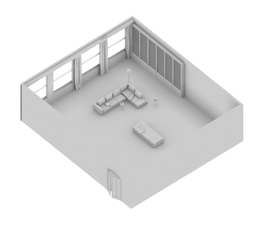
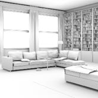
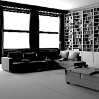
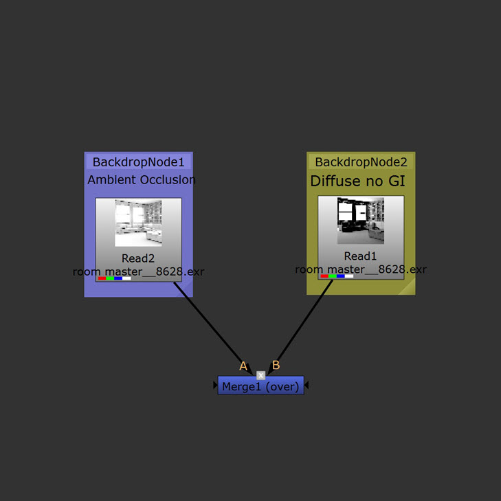
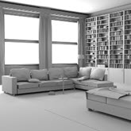
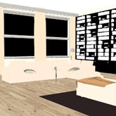
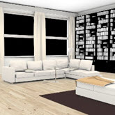

使用环境光遮挡进行渲染
通过后期处理软件组合的环境光遮挡和直接照明渲染
另一种为房间照明的方法是使用环境光遮挡。其典型的工作流是将环境光遮挡渲染合成到没有任何 GI 漫反射光线的漫反射渲染图像上。其优点在于，通常渲染速度更快，并且可以在合成时给予更多的创意控制。您也不需要向场景中添加任何 GI 漫反射或 GI 光泽光线。但是，它并不是一种物理上精确的方法，并且需要具备一定的合成经验才能微调最终外观。

Ai 环境光遮挡着色器
- 首先，创建一个 Ai 环境光遮挡着色器，并将其指定给房间几何体。将环境光遮挡着色器的“采样数”(Samples)增加到 6 左右会减少与此着色器相关的任何噪波。
- 使用环境光遮挡着色器渲染该场景。结果应如下图所示：

仅使用 Ai 环境光遮挡着色器进行渲染的结果
直接照明渲染
- 现在只使用直接照明来渲染场景（本例中在窗户外面布置了区域光，但您可以尝试其他灯光，例如 _skydome_light_）。但是，在本例中，请确保 GI 漫反射采样数设置为 0。您应该会注意到，渲染此场景时没有任何反弹光，因而后墙将为黑色。我们将在 Nuke 中使用环境光遮挡来“填充”没有 GI 漫反射反弹光的区域。

直接灯光（间接灯光为 0）。
合成
- 在 Nuke 中同时打开这两个渲染。创建一个合并节点，将环境光遮挡渲染连接到“A”输入，将直接灯光连接到“合并”节点的“B”输入。确保将“操作”(Operation)设置为“覆盖”(Over)。将“混合”(mix)调整为 0.5 左右。您应该会发现，“直接灯光”图像的黑色区域出现了环境光遮挡。显而易见，我们实际上通过一种“作弊”的方式使用环境光遮挡实现了反弹光的效果。

环境光遮挡渲染与漫反射渲染合并（无 GI）
下面的图像显示了将“环境光遮挡”渲染合并（覆盖）到漫反射照明（无 GI）渲染后的结果。这种方法的优势在于渲染速度较快，并且不含任何 GI 噪波。
|  |  |
|
| 环境光遮挡和直接灯光渲染合并在一起 | 环境光遮挡渲染 | 直接灯光（间接灯光为 0） |
下面的图像显示了使用设置为“平面”(Flat)颜色的 Ai 工具着色器进行渲染的结果，及其与环境光遮挡 AOV 合并后的结果。通过这种方法可以非常快速地进行渲染，但渲染的效果远达不到照片级水准。
|  |  | |
| 环境光遮挡 | 工具着色器设置为纯色 | 环境光遮挡和工具着色器合并在一起 |